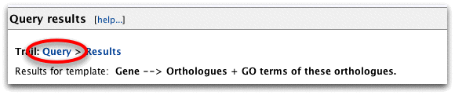
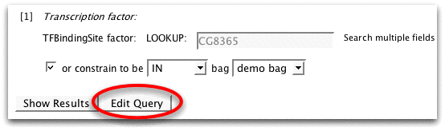

The QueryBuilder allows you to edit queries or create new ones. It is aimed at advanced users but editing a template query to change the output or add a filter is easy.
Now use the back button to get back to the results table.
Click on 'Query' in the Trail to get back to the template form.
Now click 'Edit Query' to bring up the QueryBuilder.

The pane on the left is a view of the data model starting at the TFBindingSite class and showing all attributes (e.g. name, symbol) and related classes (e.g. organism, proteins). FlyMine uses an object based data model - biological types are termed 'classes' and individual entries are termed 'objects'. For example the 'zen' and 'eve' genes are both objects of the class Gene.
You can click ![[plus]](plus.gif) to open related classes and see their attributes. Use the
to open related classes and see their attributes. Use the ![[show]](show.gif) button to add fields to the output. The
button to add fields to the output. The ![[constrain]](constrain.gif) button lets you add constraints (filters).
button lets you add constraints (filters).
The query summary section shows the constraints applied to this query. Notice that one of them says 'factor Gene' then 'IN demo bag'. This shows us that the search is using just the transcription factors from the bag we saved earlier.
What if we want to search for all transcription factors in FlyMine and find the genes they regulate? We can just remove this constraint and run the query again.
Click on the ![[red cross]](cross.gif) button next to 'IN demo bag' to remove the constraint.
button next to 'IN demo bag' to remove the constraint.
![[remove constraint]](remove_constraint.png)
Now click 'Show results' to run the query.
![[click show results]](click_show_results.png)
The results table now shows all the transcription factors in FlyMine, the genes they regulate and the data set that provided this infomation. You can use the summary buttons ![[summary icon]](summary_maths.png) on the 'Transcription factor > symbol' and 'Regulated gene > symbol' columns to find more information about the numbers of each.
on the 'Transcription factor > symbol' and 'Regulated gene > symbol' columns to find more information about the numbers of each.